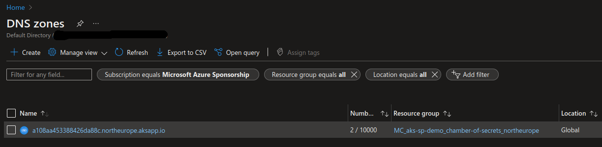
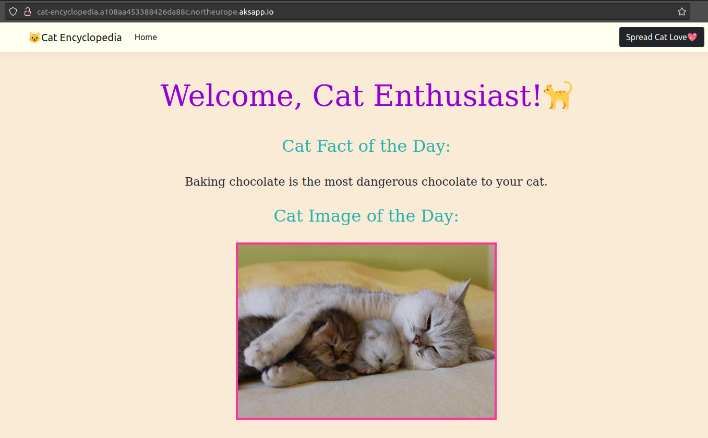
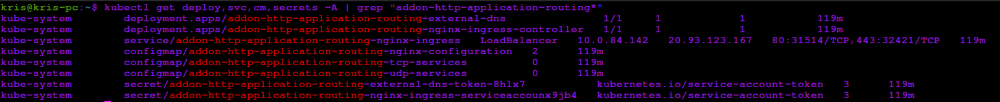

Kris's Quick Cup of (A)K8S #4 - HTTP Application Routing Add-on in AKS

Normally if you were to expose an application running in AKS for external access, you would need multiple bits and pieces to be deployed and configured:
- Ingress Controller to ensure proper traffic routing and load balancing in an AKS cluster;
- Certificate management solution for automatic obtaining, provisioning, renewing and using of TLS certificates for applications running in AKS clusters;
- DNS zone and respective DNS records to expose applications on a specific URL for external access;
This can be quite a lot to set up and will in some cases be an overhead for dev/test or playground AKS clusters. That’s when HTTP Application Routing add-on can help you out and do all this work for you! 🚀
⛔️ HTTP Application Routing add-on is supposed to only be used for dev/test purposes and must not be used in production! It will not provide any TLS encryption or security filtering for your applications!
HTTP Application Routing is an add-on that you can enable both for new and existing AKS clusters. Once it’s enabled, it will automatically configure an Ingress Controller and DNS zone for the respective cluster. It will also automatically provision a DNS A record in the DNS zone for applications that are to be exposed based on a specific Ingress annotation.
Let’s take a look at a concrete example: I would like to expose a “cat-encyclopedia” application running in my “chamber-of-secrets” AKS cluster for external access so that I can experiment with it and run some cool demos that others can also test - how can I quickly do that with help of HTTP Application Routing add-on?
- Enable HTTP Application Routing add-on for “chamber-of-secrets” AKS cluster:
az aks enable-addons --resource-group aks-sp-demo --name chamber-of-secrets --addons http_application_routing
You can also enable HTTP Application Routing add-on as part of a new AKS cluster creation:
az aks create --resource-group aks-sp-demo --name chamber-of-secrets --enable-addons http_application_routing
Check if the add-on was successfully enabled in “chamber-of-secrets” AKS cluster:
az aks addon list --name chamber-of-secrets --resource-group aks-sp-demo | jq '.[] | select(.name=="http_application_routing")'
- Check the name of the DNS Zone that was provisioned for “chamber-of-secrets” AKS cluster. DNS Zone is deployed to the infrastructure resource group of your AKS cluster so please ensure that you’re providing a correct resource group for this Azure CLI command:
az network dns zone list --resource-group MC_aks-sp-demo_chamber-of-secrets_northeurope. You can also check the same in Azure Portal, by going to “DNS Zones” and locating the DNS Zone that was provisioned to the same resource group as the AKS cluster infrastructure resources.

- Add annotation to “cat-encyclopedia” Ingress resource definition that will flag this application for HTTP Application Routing add-on. Add host URL that you want to expose application on. Host URL consists of application name (or other name that you want to expose application with) + DNS Zone created by HTTP Application Routing add-on.
In this case host will be cat-encyclopedia.[AKS_DNS_ZONE]:
apiVersion: networking.k8s.io/v1
kind: Ingress
metadata:
name: cat-encyclopedia
namespace: cat-encyclopedia
annotations:
kubernetes.io/ingress.class: addon-http-application-routing # <- add this annotation to flag the app for HTTP Application Routing add-on
# OTHER ANNOTATIONS ARE OMITTED
spec:
rules:
- host: cat-encyclopedia.a108aa453388426da88c.northeurope.aksapp.io # <- update this property with your application's host URL
http:
paths:
- backend:
service:
# REST OF THE CODE IS OMITTED
And voilà! Your application is now publicly accessible on cat-encyclopedia.a108aa453388426da88c.northeurope.aksapp.io URL! If I now go to http://cat-encyclopedia.a108aa453388426da88c.northeurope.aksapp.io in a browser, I can see my app up and running, ready to be demoed to the world!😺

Sometimes it may take a while (up to 10-15 minutes in some cases, from my experience) for an application to be reachable on a configured DNS record so if you get a “We’re having trouble finding that site." error when accessing an application, just give it a few more minutes before re-trying. If the error still persists, you can debug eventual errors by following documentation from Microsoft: HTTP Application Routing - Troubleshoot
Once you delete an AKS cluster, all the resources provisioned by HTTP Application Routing add-on will be deleted for you. The same will happen if you disable the add-on but in this case some resources like Secrets and ConfigMaps may still persist in the cluster. You can check if there are any resources that haven’t been cleaned up by running following kubectl command: kubectl get all,cm,secrets -A | grep "addon-http-application-routing*"

HTTP Application Routing can save you quite some time during development and testing, try it out for yourself and let me know what you think! Check out documentation from Microsoft about this add-on as well: HTTP application routing
That's it for now - Thanks for reading and till next tech tip 😼